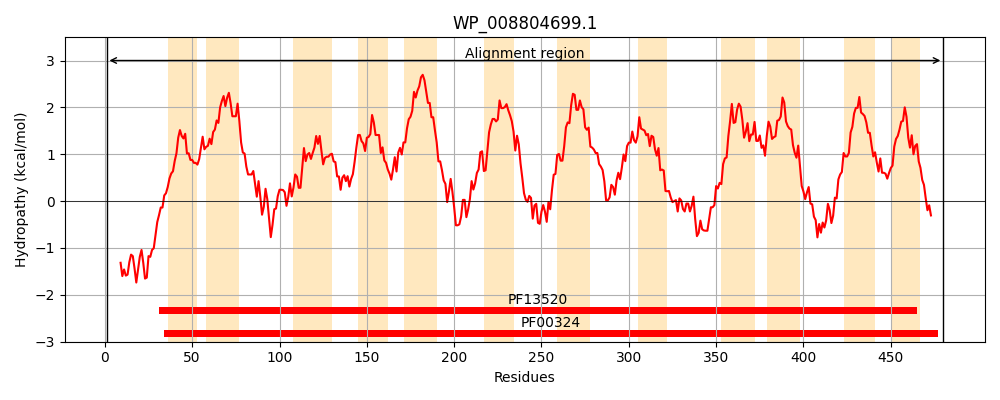
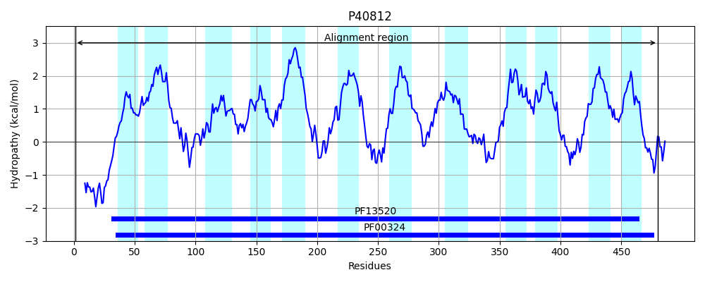
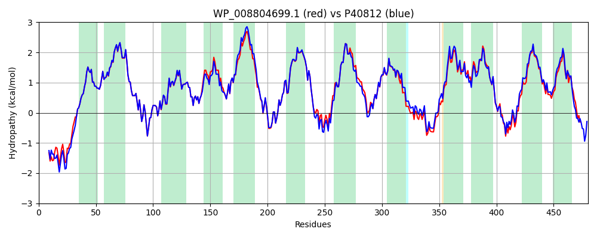

Hit Accession: P40812
Hit TCID: 2.A.3.1.8
Hit Description: gnl|BL_ORD_ID|10385 gnl|TC-DB|P40812|2.A.3.1.8 L-asparagine permease (L-asparagine transport protein) - Salmonella typhimurium.
Mach Len: 480
e:0.000000
Query TMS Count : 12
Hit TMS Count: 12
TMS-Overlap Score: 11.500000
Predicted Substrates:CHEBI:22653;asparagine
BLAST Alignment:
Score: 2289 , Bit scores: 886 bits, E-value: 0.0e+00, Alignment length: 480, Percentage identity: 91
Query: 1 MNTKHDTAAEHHAAKRHWLNSHEAGYHKAMGNRQVQMIAIGGAIGTGLFLGAGARLQMAGPALALVYLVCGIFSFFILRALGELVLHRPSSGSFVSYAREFLGEKAAYVAGWMYFVNWAMTGIVDITAVALYMHYWGAFGDVPQWVFALGALAIVGTMNMIGVKWFAEMEFWFALVKVLAIVAFLVVGTIFLGSGKPLDGNATGFHLITDNGGFFPHGLLPALVLVQGVVFAFASIELVGTAAGECKDPESMVPKAINSVIWRIGLFYVGSVVLLVLLLPWTAYQAGQSPFVTFFSKLGVPYIGSVMNIVVLTAALSSLNSGLYSTGRILRSMSMGGSAPKFMSKMSRHHVPYAGILATLAVYVVGVFLNYLVPSQVFEIVLNVASLGIIASWGFIVVCQMRLRKAIKEGKAAKVSFRMPGAPFTSWLTLLFLFSVLVLMAFDYPNGTYTIGSIPLLAVLLVAGWFGVRKRVHAIHSTAP 480
M T+ AAE HAAKR WLN+HE GYHKAMGNRQVQMIAIGGAIGTGLFLGAGARLQMAGPALALVYL+CGIFSFFILRALGELVLHRPSSGSFVSYAREFLGEKAAYVAGWMYF+NWAMTGIVDITAVALYMHYWGAFGDVPQWVFALGAL IVGTMNMIGVKWFAEMEFWFAL+KVLAIV FLVVGTIFLG+G+PL+GNATGFHLITDNGGFFPHGLLPALVL+QGVVFAFASIELVGTAAGECKDP+ MVPKAINSVIWRIGLFYVGSVVLLVLLLPW AYQAGQSPFVTFFSKLGVPYIGS+MNIVVLTAALSSLNSGLY TGRILRSMSMGGSAPKFM+KMSR HVPYAGILATL VYVVGVFLNYLVPS+VFEIVLN ASLGIIASW FI+VCQMRLR+AIKEGKAA VSF++PGAPFTSWLTLLFL SVLVLMAFDYPNGTYTI S+PL+A+LLVAGWFGVR+RV IH TAP
Sbjct: 1 MKTQTTHAAEQHAAKRRWLNAHEEGYHKAMGNRQVQMIAIGGAIGTGLFLGAGARLQMAGPALALVYLICGIFSFFILRALGELVLHRPSSGSFVSYAREFLGEKAAYVAGWMYFINWAMTGIVDITAVALYMHYWGAFGDVPQWVFALGALTIVGTMNMIGVKWFAEMEFWFALIKVLAIVIFLVVGTIFLGTGQPLEGNATGFHLITDNGGFFPHGLLPALVLIQGVVFAFASIELVGTAAGECKDPQKMVPKAINSVIWRIGLFYVGSVVLLVLLLPWNAYQAGQSPFVTFFSKLGVPYIGSIMNIVVLTAALSSLNSGLYCTGRILRSMSMGGSAPKFMAKMSRQHVPYAGILATLVVYVVGVFLNYLVPSRVFEIVLNFASLGIIASWAFIMVCQMRLRQAIKEGKAADVSFKLPGAPFTSWLTLLFLLSVLVLMAFDYPNGTYTIASLPLIAILLVAGWFGVRRRVAEIHRTAP 480 | Protein Hydropathy Plots: |
|---|
|  |  |
Pairwise Alignment-Hydropathy Plot:
|
|---|
|  |